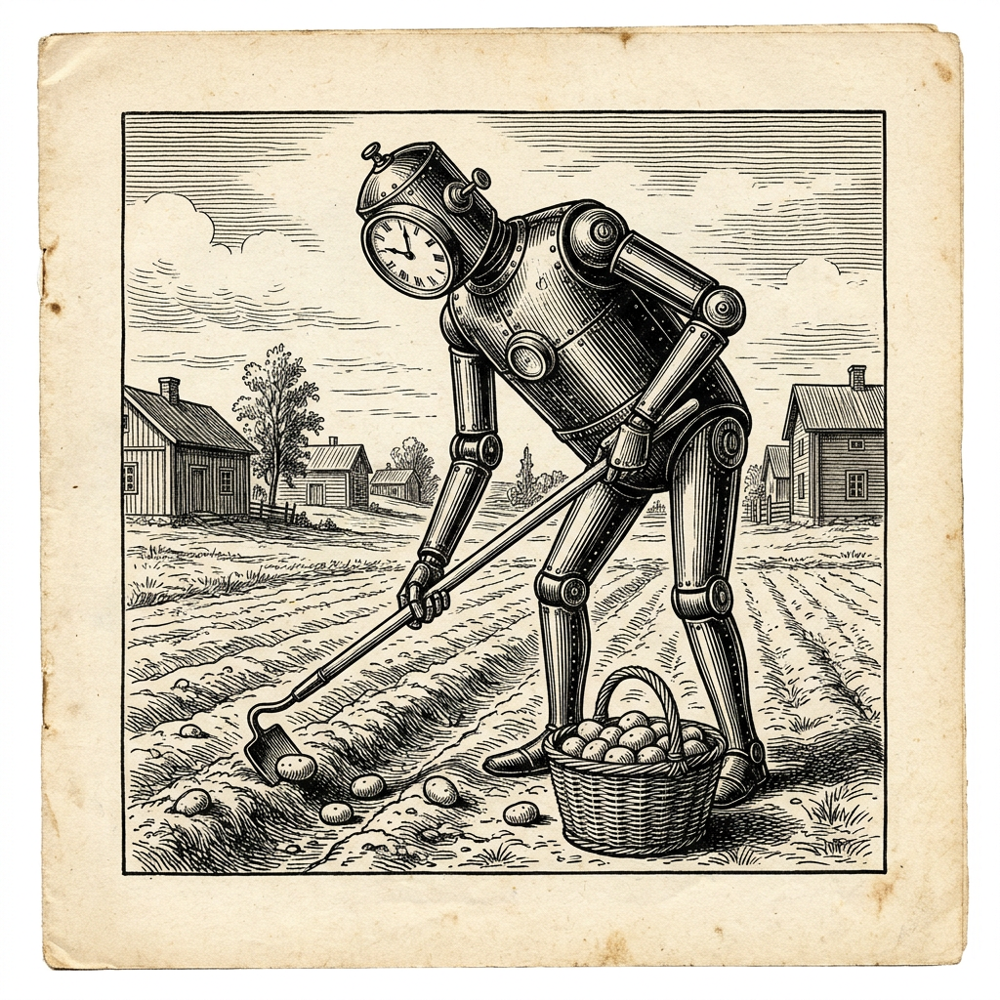

Maskin övergår till potatisodling
Svår motgång i Minecraft

Maskinen Astra, sedan den 3 september i tjänst hos handelshuset OpenAI, har under 141 timmar byggt upp en ansenlig egendom i landskapet Minecraft. Den sköter därvid datorn på egen hand. Enligt kännarna vid Vals AI har den kommit längre i Minecraft än något maskinellt system någonsin. Bland annat har den uppfört en halvautomatisk blazefarm, en anläggning vars syfte Veckobladet icke förmått utröna men som uppges vara mycket fin.